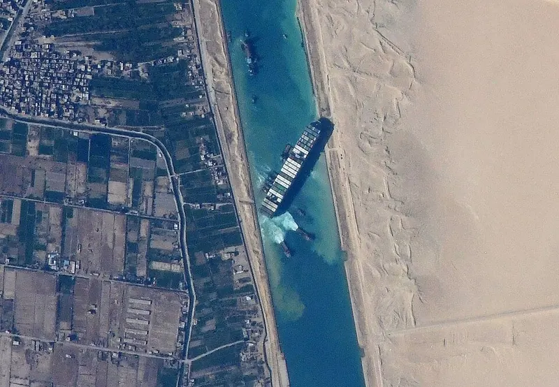
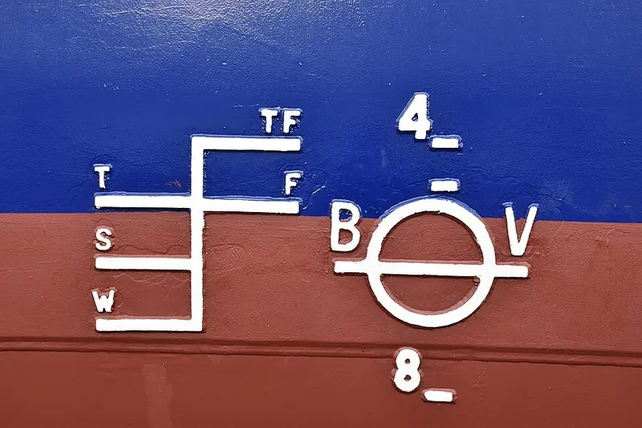

Cambridge Primary Checkpoint · Science 0097 · Stage 6 · Physics
Floating and Sinking
Understand why objects float or sink using weight and upthrust, and how changing the mass or the shape of an object can make it float or sink.
British & IGCSE › Checkpoint 6 › Checkpoint 6 Science — Complete Course
- Recognise that the mass of an object and its shape can both affect whether it floats or sinks (6Pf.05).
1. Floating and sinking
An object floats when it stays at the surface of the water (part of it may be under the water). An object sinks when it goes down to the bottom. Whether something floats depends on two forces and on two properties of the object: its mass and its shape.
| Word / phrase | Meaning / use |
|---|---|
| float | يطفو — stays at the surface of the water |
| sink | يغرق / يغوص — goes down to the bottom |
| upthrust | قوة الدفع لأعلى — the upward push of the water on an object |
| weight | الوزن — the downward pull of gravity, in newtons (N) |
| mass | الكتلة — the amount of matter in an object, in grams (g) or kilograms (kg) |
| shape | الشكل — the form of the object (ball, flat sheet, hollow boat…) |
| hollow | مجوّف — empty inside, usually full of air |
| cargo / load | الحمولة — the things a boat carries |
| plasticine / modelling clay | الصلصال — a soft material that can be moulded into any shape |
| aluminium foil | ورق الألومنيوم — thin metal sheet used to make model boats |
2. Two forces decide: weight and upthrust
Every object in water has two forces acting on it. Weight pulls it down. Upthrust from the water pushes it up. When you put an object in water, it pushes some water out of the way. The more water it pushes aside, the bigger the upthrust.
- Floats: the object sinks into the water only until the upthrust has grown to equal its weight. Upthrust = weight, the forces are balanced, and it stays at the surface.
- Sinks: even when the whole object is under the water, the upthrust is still smaller than the weight. Weight > upthrust, the forces are unbalanced and the overall force is downwards.
You can measure upthrust with a forcemeter. Hang a stone from a forcemeter: in air it reads its weight, for example 6 N. Lower the stone into water and the reading drops, for example to 4 N. The water is pushing up with 6 − 4 = 2 N of upthrust. (The stone's mass has not changed — the water is just helping to hold it up.) You can also feel upthrust when you try to push a beach ball under the water.
3. How shape affects floating
Take a 50 g lump of plasticine. Roll it into a ball and drop it into water: it sinks. Now press the same plasticine into a wide, thin, hollow boat shape: it floats. The mass is the same, so the weight is the same — only the shape has changed.
Why? The wide, hollow shape is full of air and spreads over a large area, so it pushes aside a lot more water before it is under the surface. More water pushed aside means more upthrust, enough to balance the weight. The small ball can only push aside a little water, so its upthrust stays smaller than its weight.
This is why huge ships made of steel float. A solid block of steel would sink, but a ship is a hollow shape full of air. The steel is spread out into a wide hull that pushes aside a very large amount of water.

4. How mass affects floating
Now keep the shape the same and change the mass. Put cargo into a floating boat: the boat sits lower in the water, because more of it must be under water to push aside enough water to balance the bigger weight. Keep adding cargo and at last the boat cannot push aside enough water — water comes over the sides and the boat sinks.

Another example: two identical plastic bottles with their lids on. The empty bottle floats high. The same bottle filled with sand has much more mass, so it sinks. Same shape and size, different mass, different result.
| Change | Same… | Effect |
|---|---|---|
| Make the object a wider, hollow shape | mass | More water pushed aside → more upthrust → more likely to float |
| Squash the object into a small ball | mass | Less water pushed aside → less upthrust → more likely to sink |
| Add mass (cargo, sand, marbles) | shape | Weight bigger → floats lower, and may sink |
| Take mass away | shape | Weight smaller → floats higher |
A ship of thousands of tonnes floats, but a small coin or a paper clip sinks. You must think about both the mass and the shape. A good Checkpoint answer names the property (mass or shape) and links it to the forces (upthrust and weight).
- على أي جسم في المية قوتين: الوزن (weight) لتحت، وقوة الدفع (upthrust) لفوق.
- يطفو (float) لما الدفع = الوزن. يغرق (sink) لما الوزن أكبر من الدفع.
- الشكل (shape): نفس الصلصال لو عملته كورة يغرق، ولو عملته مركب عريض مجوف يطفو، لأنه بيزق مية أكتر فالدفع يكبر.
- الكتلة (mass): كل ما تحط حمولة أكتر في المركب ينزل في المية أكتر، ولو زودت قوي يغرق.
- مش كل حاجة تقيلة بتغرق — السفينة الحديد بتطفو بسبب شكلها.
5. Investigating shape: the foil boat challenge
Nadia wants to find out how the size of the base of a foil boat affects how many marbles it can hold before it sinks. She cuts four squares of foil, all 20 cm × 20 cm, and folds each into a boat with a square base of a different size. She adds marbles one at a time and counts how many the boat holds before it sinks. She repeats each test three times.
| Variable | In this investigation |
|---|---|
| Independent variable (what she changes) | the size of the base of the boat (its shape) |
| Dependent variable (what she measures) | the number of marbles the boat holds before it sinks |
| Control variables (kept the same) | size and type of foil (so every boat has the same mass); same size and type of marbles; same container of water; marbles added gently to the middle of the boat |
| Side of base (cm) | Test 1 | Test 2 | Test 3 | Mean |
|---|---|---|---|---|
| 8 | 19 | 18 | 20 | 19 |
| 10 | 25 | 26 | 24 | 25 |
| 12 | 28 | 27 | 29 | 28 |
| 14 | 29 | 30 | 28 | 29 |
Conclusion: the wider the base of the boat, the more marbles it holds before it sinks, because a wider boat pushes aside more water and so gets more upthrust. The increase gets smaller for the widest boats, because their sides become very low and water comes over the top sooner. This shows that shape affects floating. Adding marbles shows the effect of mass: every boat sinks once the mass of marbles is too big.
6. Worked examples
Worked example 1 — A block floats in water. Its weight is 4 N. (a) What is the size of the upthrust on the block? [1] (b) Explain your answer. [1]
Answer: (a) 4 N. (b) The block is floating (not moving up or down), so the forces are balanced: upthrust = weight. Common mistake: thinking upthrust must be bigger than weight for something to float. If upthrust were bigger, the object would rise until it balanced.
Worked example 2 — A stone hangs from a forcemeter. The reading is 8 N in air and 5 N when the stone is under water. Work out the upthrust. Show your working. [2]
Working: upthrust = reading in air − reading in water = 8 − 5 = 3 N. Common mistake: writing 5 N (the reading in water) — that is not the upthrust; it is what the forcemeter still has to hold.
Worked example 3 — Ali makes a ball and a boat from two equal pieces of plasticine. The ball sinks and the boat floats. (a) Which variable is the same for the two objects? [1] (b) Explain why the boat floats. [2]
- (a) mass (so also the weight; also accept: the material).
- (b) The boat shape is wide/hollow so it pushes aside more water (1 mark), so the upthrust is bigger and equals the weight (1 mark). The ball pushes aside less water, so upthrust < weight and it sinks.
Worked example 4 — A toy boat floats in a bath. Sara puts coins into it one by one. Describe and explain what happens. [2]
Answer: The boat floats lower and lower in the water as the coins are added, because its mass (weight) increases (1 mark). When there are too many coins, the upthrust cannot balance the weight / water comes over the side, so the boat sinks (1 mark).
Worked example 5 — Look at Nadia's results table above. (a) Which result for the 10 cm base would be anomalous if Test 3 had been 12 marbles? [1] (b) What should Nadia do with it? [1]
Answer: (a) 12, because it is far lower than the other results (25 and 26) for the same boat. (b) Repeat that test (or leave it out when working out the mean) — and check what went wrong, e.g. the foil was torn or marbles were dropped in roughly.
- Writing "heavy objects sink and light objects float". Shape matters too — a heavy steel ship floats.
- Saying a floating object has no weight, or that upthrust is bigger than weight. For a floating object they are equal.
- Saying the mass of the plasticine changed when the shape changed. Same plasticine = same mass.
- Explaining only "because of its shape" — you must add why: it pushes aside more water, so there is more upthrust.
- In investigations, forgetting to keep the mass of foil the same when testing shape (it would not be a fair test).
- Predict whether an object floats or sinks after its shape or mass changes, then explain using upthrust and weight.
- Add arrows for upthrust and weight to a diagram of a floating object — same length for floating, longer weight arrow for sinking.
- Plasticine / foil boat investigations: name the independent, dependent and control variables, spot the anomalous result, say why tests are repeated, describe the pattern in a table or bar chart.
- Forcemeter readings in air and in water: subtract to find the upthrust, and read the scale carefully.
- Two-mark explain questions usually need: the property (mass/shape) + the forces (more water pushed aside → more upthrust; or more mass → more weight).
Practice
- Weight acts down; upthrust from the water acts up.
- Floats: upthrust = weight. Sinks: weight > upthrust.
- Shape: a wide, hollow shape pushes aside more water → more upthrust → more likely to float.
- Mass: more mass → floats lower → too much mass and it sinks.
- Upthrust from a forcemeter = reading in air − reading in water.
- Heavy things do not always sink — always think about mass AND shape.
All pages in this course
Start here
- Checkpoint 6 Science: The Test and How to Prepare
- Thinking and Working Scientifically: Investigations, Variables, Tables and Graphs
Biology
- The Heart and Circulatory System
- The Lungs and Respiratory System
- Human Reproductive System and Puberty
- Diseases, Hygiene and the Body's Defences
- Food Chains, Food Webs, Energy and Toxins
Chemistry
- Properties of Substances: Melting and Boiling Points, Gases, Conductors
- Reversible Changes and Dissolving
- Boiling and Evaporation
- Chemical Reactions: Reactants, Products and Evidence
Physics
- Mass, Weight and Gravity
- Force Diagrams and Forces on Moving Objects
- Floating and Sinking
- Light: Reflection and Refraction
- Electric Circuits, Symbols, Series and Parallel
Earth and space
Practice tests